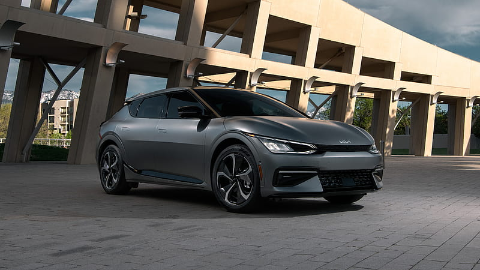

L x W x H : 4695 mm x 1890 mm x 1755 mm
Max Power : 147kW
Max Torque : 380 Nm
Fuel Type : Petrol / Diesel
Nexon EV
L x W x H : 3994 mm x 1811 mm x 1616 mm
Max Power : 142.68bhp
Max Torque : 215Nm
Fuel Type : Electric
XUV3XO
L x W x H : 3990mm x 1821mm x 1647mm
Max Power : 85.8 kW
Max Torque : 300 Nm
Fuel Type : Petrol / Diesel

EV6
L x W x H : 4695 mm x 1890 mm x 1570 mm
Max Power : 325Ps
Max Torque : 605Nm
Fuel Type : Electric
Did you Know?
In 1896 the great inventive engineer Henry Ford finished building his first car, called The Quadricycle, in a small shed behind his Detroit house. He was to become one of the world’s most successful businessmen—but this time he had badly miscalculated.
The completed Quadricycle wouldn’t fit out through the workshop door. He’d built it bigger than the width of the door. Henry had to resort to using an axe and brute force to chop out the workshop’s doorframe and knock out the bricks around the door to make the opening wider. Then at last he could get his pioneering creation out for its first ever drive
Did you Know?
Millionaire rock star Noel Gallagher forgot he’d bought a pristine classic car for £110,000. The former Oasis guitarist was puzzled when a beautifully restored 1967 Jaguar Mark II arrived at his house on a delivery truck. It turned out he had ordered it spontaneously two years previously.
Since then a specialist company had been painstakingly restoring it for him. At the time he ordered it he had hoped to learn to drive—but never got round it. He forgot the whole thing. So he has never driven the classic car he forgot he bought… and it still sits unused in his garage.
Did you Know?
Bowler-hatted businessman and inventor Elwood Haynes astonished one of his earliest customers by delivering a pioneering horseless carriage personally in 1898. Elwood drove the spartan open-topped car all the way from his Indiana workshop to the wealthy doctor’s home in New York City.
It was the first 1,000-mile car journey ever completed in the United States… and it took over a month (the car he delivered became known as "The Pioneer". It was later donated to the Smithsonian museum and appeared on a US postage stamp in 1995).
Did you Know?
German racing driver Ernst Loof holds a Formula One record that is unlikely to be ever broken. He had a career as a successful car and bike designer. His racing career was less triumphant however. Loof competed in just one F1 race: the 1953 German Grand Prix at the Nürburgring.
Loof lined up on the grid with all the other contestants in a Veritas racing car that he had helped to design. When the race started all the cars pulled away but Loof’s car immediately suffered a fuel pump failure. The car stopped after just six feet (two meters) scoring no points at all… giving Loof the world’s shortest-and-least-successful-ever F1 career.
Did you Know?
According to the Guinness Book of Records the world’s hairiest car is a Fiat 500 owned by Maria Mugno of Salerno in Italy. The Italian hairdresser has spent hundreds of hours importing bags of human hair from India, because she claims the hair is stronger from the sub-continent than Europe.
She then glues and stitches the locks onto every surface of the car, inside and out, including the steering wheel, dashboard and doors. Her furry Fiat is still road-legal however and is a familiar sight as she drives it around Salerno.
Did you Know?
In the inaugural Indy 500 race of 1911, all but one of the 40 entrants carried a driver plus an observer, whose job was to warn the driver about other cars coming up behind. It was the normal arrangement in races of that era.
But in the 40th car was Ray Harroun, who took the outrageously risky decision to drive alone. Harroun drove a bright yellow car he had built himself and experimented with an eight-by-three-inch mirror on a stand fixed to his dashboard instead of an observer. It is believed to be the first use of a rear-view mirror. Being one person lighter and more aerodynamic, Harroun’s car easily won the race by more than half a mile.